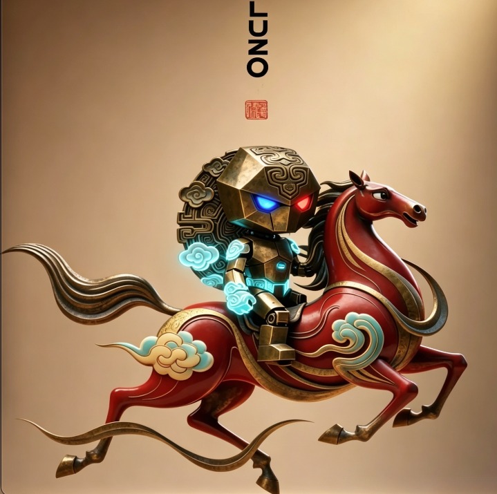

🔮 修仙 · 热血 · 哲学思辨
一条"无灵根少年逆天改不了命"的悲情史诗之路

我本凡尘一粒砂，奈何天要我成峰。
蛮荒界边陲，无灵根少年河一被万兽宗拒于门外，受尽冷眼。老酒鬼临终前将一枚古朴戒指塞入他掌心——那是改变一切的钥匙：墟空戒。
凭借"我不认命"的执念，河一以无灵根之躯踏入修行路，却在无意间唤醒了沉睡万年的巴彦巨龙。巨龙的臣服、前世"河"的记忆碎片、九界古老契约的苏醒……一切都在将他推向一个早已注定的命运。
然而，当他越攀越高，九界的真相也愈发触目惊心：九界能量循环崩塌，界主暗中布局，名为"裂隙"的远古灾厄正在苏醒。
前世的"河"曾以命封印裂隙，却只换来轮回重来。这一世，命运的齿轮再度咬合——
他结识了神秘的林清大小姐、亦正亦邪的月妖娆、憨厚可靠的阿灰；也在黑暗中遭遇始源界的围杀、裂隙势力的渗透、林渊那惊鸿一现的背影。
随着九界青年大赛揭开序幕，天才背后的秘密、能量循环的真相、一切因果的源头——逐一浮出水面。
当百万大军压境，当裂隙撕裂界膜，当至亲挚友命悬一线……
他终于明白：真正的强者，不是站在巅峰睥睨众生，而是有勇气放下一切，回归本真。
九界浩荡，尘归尘，土归土。
而他，选择做那颗永不沉沦的星。